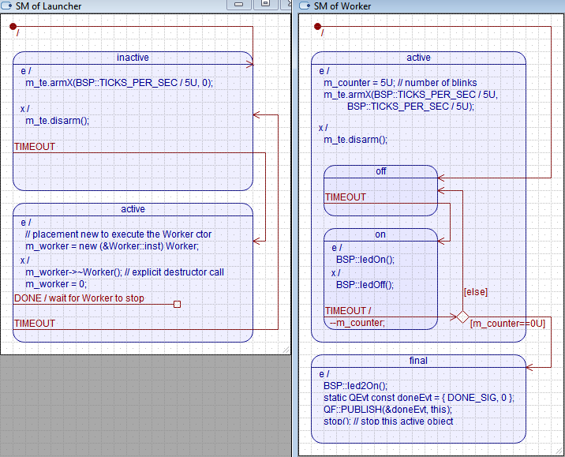

Start-Stop example for NUCLEO-H743ZI MCU (Cortex-M7) demonstrates staring and stopping active objects multiple times during the runtime, as opposed to starting AOs only at the beginning.
The code for the example is generated automatically by the QM Model-Based Design tool (QM version 4.5.0 or higher).
The start-stop application consists of two AOs:

The actual visible work is performed by the Worker AO, which blinks the yellow LED (LD1) on the NUCLEO-H743ZI board. After blinking the LED five times, the Worker AO publishes turns the blue LED (LD2), publishes the DONE event and stops itself (by calling QP::QActive::stop() on itself).
The Launcher AO subscribes to the DONE event. Upon reception of this event, The Launcher AO gives the Worker a bit of time (at least one clock tick) to cleanly terminate and then it explicitly destroys the Worker. The Worker destructor turns the blue LED (LD2) off.
Next the Launcher instantiates the Worker AO by means of the placement new operator and then it starts it again to repeat the cycle, which goes no forever.
It is possible to use the standard new and delete operators with the standard heap, or some customized memory allocation (overloaded new/delete). This goes beyond the scope of this example.
Supported Toolchains**
This example contains sub-directories for building it with various toolchains. The following toolchains are supported:
Please refer to the README.txt files in these sub-directories for more information about building and running the examples.
QP/Spy Support**
This example demonstrates the QP/Spy software tracing in the Spy build configuration. The QP/Spy uses the virtual COM port provided by the NUCLEO-H743ZI board. To see the QP/Spy output, you need to launch the qspy host utility, as follows (Windows command prompt):
qspy -u -c COM4
where COM4 is the particular virtual serial port registered by your NUCLEO board. You need to adjust the COM port number for your machine.
Programming the NUCLEO Board**
The NUCLEO boards appear as a USB-flash drive in the file system. Programming of the board is done by simply copying the binary into thy flash drive letter.
For example, assuming that the NUCLEO board appears as drive E:, you program it with the following command:
copy dbg\start-stop.bin E:
Demonstrated Features**
Next: ThreadX examples